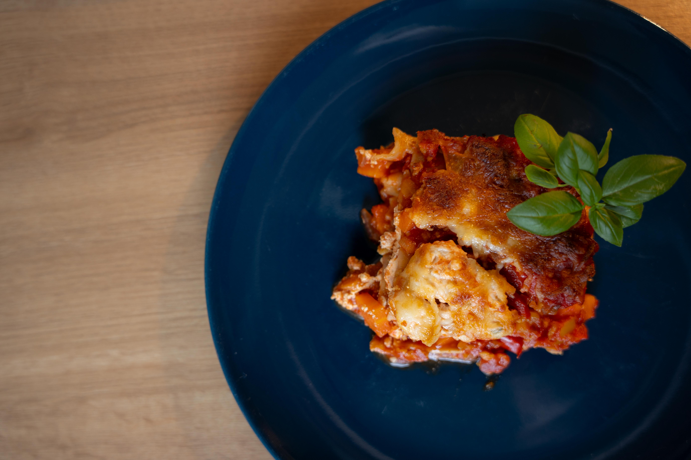

Das Kochbuch für unsere Rezepte
Vegetarische Lasagne

Eigentlich ist die grundlage genau wie beim Chili nur ohne Bohnen und mit Käse drüber!
Zubereitung
1. Wasser kochen und Sojageschnetzelts übergiesen und 15 min quellen lassen. Bisschen Brühe dazu.
Brühe
75g Sojageschnetzeltes
2. Gemüse schnibbeln (was gerade da ist), kurz anbraten und in den Topf tun.
1 Paprika
3-4 Karotten
1 Zwiebel
3. Sojageschnetzeltes zusammen mit Zwiebeln
anbraten und mit Tomatenmark ablöschen. Alles in den Topf und gehackte Tomaten dazu. Mit passierten Tomaten auffüllen, damit es nicht zu dickflüssig wird.
Tomatenmark
1 Dose Gehackte Tomaten
Passierte Tomaten
Chili Pulver
Paprika Edelsüß
Salz & Pfeffer
4. Die "Fake Bechamel Soße" zubereiten und den Ofen schonmal vorheizen. Dazu einfach alles Zutaten zusammen mischen. Etwas Wasser dazu tun, wenn
es zu dick wird und bisschen würzen.
250g Magerquark
Kleiner Becher Körniger Frischkäse
Salz & Pfeffer
5. Dann zuerst den Gemüsemix schichten, da drauf dann Bechamel-Fake und dann die Lasagne Platten. Oben dann Streukäse drauf.
Alles in den Ofen für ca. 40 Minuten - Platten brauchen bisschen um richtig durchzukochen. Nach 25 Minuten den Käse mit Alufolie abdecken, damit der nicht verbrutzelt.
Lasagne Platten
Streukäse